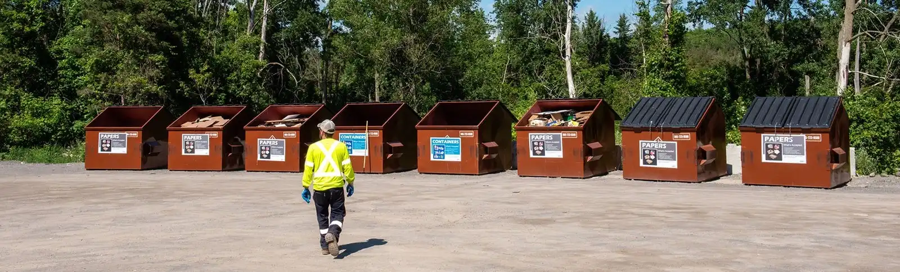

Provincial & National Policies
How Provinces & Nations Promote Green & Regulate E-Waste
Provincial and municipal governments play an important role in managing e-waste and reducing environmental harm. In Ontario, residents can use waste management resources such as the Peel Region Waste Sorter to determine how to properly dispose of old electronics. This helps prevent electronic devices from being sent to landfills, where hazardous materials such as lead, mercury, and lithium batteries can contaminate soil and groundwater.

The Government of Canada has introduced the Greening Government Strategy to reduce the environmental impact of federal operations. The strategy aims to achieve net-zero greenhouse gas emissions from government operations by 2050 while also reducing waste and improving energy efficiency.